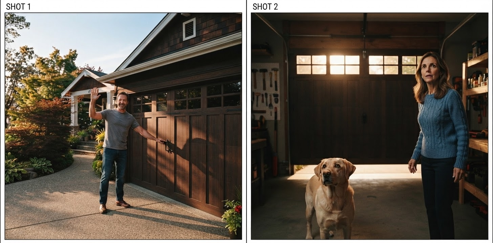

The foundational piece of The Agentic Studio. Half theory, half field notes from building a real film-production agent — one that turns a sentence into a multi-scene short. What MCP and Skills each are, why you need both, and the hard-won details that only surface once you ship.
A frontier model is a brilliant generalist with no hands and no training manual. To do real work
it needs two things it can't get from being bigger: capability it doesn't own — credentialed
image/video/audio models, databases, other people's APIs — and craft, the domain know-how for
how to use that capability well. MCP (Model Context Protocol) standardizes the first: a wire
protocol that exposes any capability as typed tools an agent can call. Agent Skills standardize
the second: versioned SKILL.md folders the agent loads on demand, carrying the procedure and the
rules. MCP is the what; Skills are the how; the LLM is the glue. This post is how they fit —
and what building a studio out of them actually taught me.
Picture a film set. Two very different things make it work.
First, the equipment and the power that runs it — cameras, lights, the grip truck, and the standardized sockets everything plugs into. Any operator can walk up, plug in, and get power without knowing how the generator works or where the electricity is billed. That's MCP: a standard socket for capability. The movie server exposes "generate an image," "animate a scene," "score this" as uniform tool calls. The credential — who pays Google for the render — lives on the server; the agent just plugs in.
Second, the department heads' craft — the cinematographer who knows which lens sells intimacy, the script supervisor who guards the 180° line, the editor who calls for another take. None of that is equipment. It's knowledge about how to use the equipment. That's Skills: portable playbooks the agent opens when the task calls for them.
The director — the LLM agent — doesn't personally operate the camera or hold the continuity notes. It coordinates: reads the brief, consults the right playbook, calls the right capability. A film crew is a distributed system that predates computers; MCP + Skills is that same org chart, re-implemented for an agent.
A better model is a better director. It still needs the crew (Skills) and the gear (MCP). Scaling the director alone doesn't get you a studio.
Three concrete moments from the studio behind The Choice — a 4-scene photorealistic short the system produced end to end.
1. Capability (MCP). "Cast Arthur." The agent calls one tool, add_character. The server runs
nano-banana on Vertex, saves a canonical reference sheet, and returns a tiny record — a movie://
link, not a megabyte of pixels.
2. Craft (Skills) → capability (MCP). "Shoot scene 1." The film-director skill decides the
coverage and continuity (a wide, a close, the reverse; hold the eyeline); the agent then calls
generate_microshot for the storyboard and start_scene_video to animate it.

3. The wiring. Skills load inside the agent (no network); MCP tools are fetched from the server over the wire. Only small links cross back — the pixels are read on demand.

That's the whole shape. Now the depth, one layer at a time.
MCP is a client/server protocol. Your agent (the client) connects to a server that advertises three kinds of things:
generate_image(prompt, model) →
{resource_uri, size, model}). Inputs and outputs are JSON-schema'd, so the model sees valid
arguments and gets back structured data, not prose it has to re-parse.movie://user/project/frame.png).Two transports matter: stdio (the server is a subprocess — great for local dev and desktop hosts) and Streamable HTTP (the server is a network service — how you run it on Cloud Run). The same server code serves both.
The load-bearing idea: links, not bytes. An image tool does not return base64. It saves the PNG
server-side and returns a ~100-token record with a movie:// URI. The bytes travel to the client
only on an explicit resources/read, and enter the model's context only if the host deliberately
feeds them in (e.g. a vision critic). Why it's the whole ballgame: the studio fans a scene out to
several parallel branches, each needing a few reference images. As links that's a few hundred tokens;
as inlined base64 it melts the context window and the fan-out stops being affordable. The economics
of parallelism live in this one decision.
A few more MCP mechanics that earn their keep:
model parameter as an enum in the schema and the agent
picks the right tier per call (fast draft vs. high-fidelity). Adding a model is a one-line change.outputSchema), so the agent
gets qc_ok, qc_issues, resource_uri as data, not a paragraph.isError: true with a message the model
can read and react to — a missing source image becomes "regenerate," not a crash.Field notes (these cost me time, so they don't cost you):
stateless_http (each request self-contained) makes the symptom disappear.*.run.app host, a server's default localhost-only host
allowlist rejects every request (HTTP 421) — again an empty toolset. Disable that specific check
when the platform (Cloud Run + IAM) is your real security boundary.Those last two present identically — the toolset comes back empty — which is exactly why they're worth knowing before you hit them.
A Skill is a folder with a SKILL.md: a short spec of a workflow, plus optional reference files.
It runs inside the agent's own runtime — no server, no network. SKILL.md is an open,
cross-runtime spec (Claude and Google's ADK both consume the same file), so craft you write once is
portable across hosts.
The mechanism that makes Skills cheap is progressive disclosure, three levels:
So a studio can carry a script-developer, a film-director, and a film-editor skill and pay
almost nothing for the ones not currently firing — like a well-indexed manual whose table of contents
stays on the desk while the chapters stay on the shelf until needed.
The division of labor is the point: a Skill decides how; it calls an MCP tool for the what.
The film-director skill holds the decision procedure (map emotion → lens, keep the 180° line) and
emits a shot plan; the rendering is an MCP call. Swap the render backend and the craft is untouched;
rewrite the craft and the capability is untouched. Clean seam.
Why this beats stuffing everything into one giant system prompt: the know-how stays modular, versioned, and mostly out of context. You can diff a skill, reuse it across agents, and add a fourth without re-reading the other three on every turn.
An ADK agent (Gemini) is handed two toolsets: a SkillToolset (the skills) and an McpToolset (the
movie server over HTTP). The LLM orchestrates; four structural pieces do the heavy lifting.
create_project → generate_style_ref →
add_character is a sequential barrier: look and cast lock first. After it, scenes are independent
and fan out in parallel. Barrier → fan-out → join, dictated by the data, not chosen for style.The result is a film where the same face, set, and light hold across scenes:
The theory above is clean. Shipping taught the corollaries:
None of these are model problems. They're state, ordering, and validation problems — which is the whole thesis: the durable, defensible layer is the orchestrator, and MCP + Skills are the two standards that let you build it without owning the render function.
Read the series: The Agentic Studio · Part 1 — the thesis · Part 2 — the architecture · Part 3 — the moat.